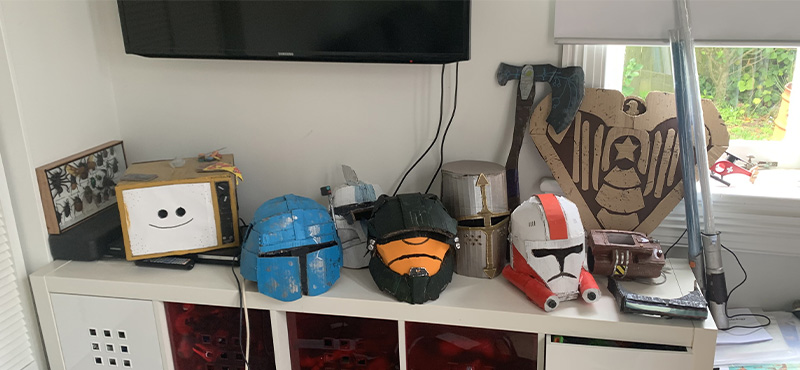

I started making stuff back in 2021 when I was Year 7. My first passion project for school was on prop making and I decided to make my own version of very classic weapons including but not limited to a lightsaber with colour changing lights, Captain America's shield, Thor's hammer.
As I progressed and fine tuned my technuqies, my creations
slowly got better due to me noticing if I started from the small
details, I could build up from it and create more acturate models.
Once I learned this, I had more people from within the film industry
praising me for the things that I had made. After a while I started to pick up
some 3D modeling and animtion skills as shown in my Showreal.